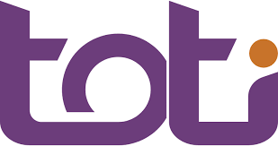
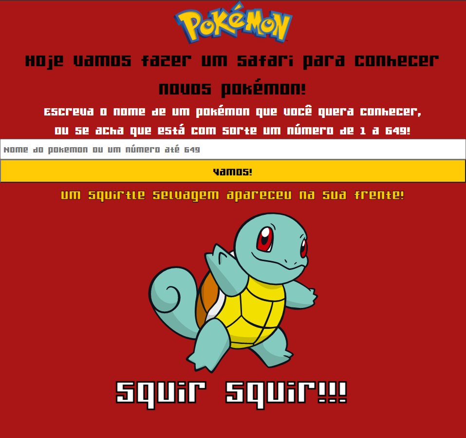
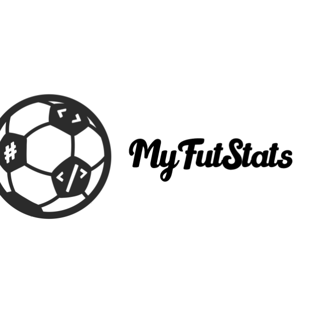
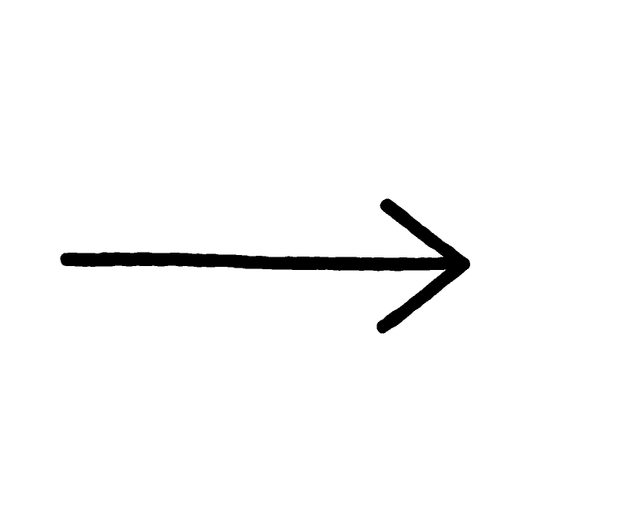
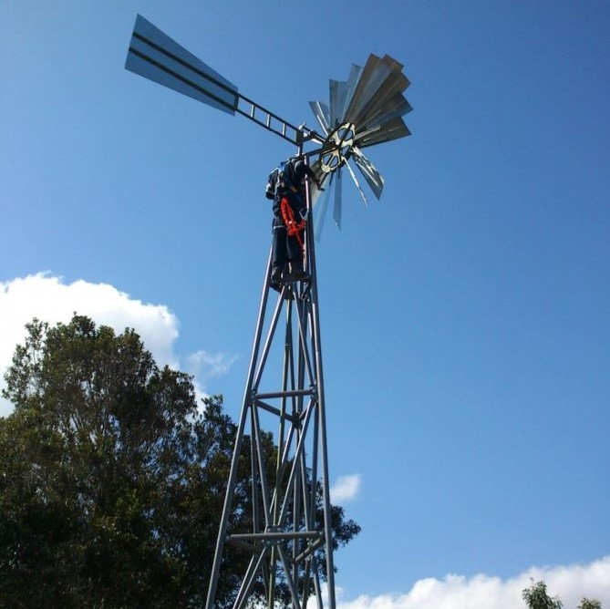

Olá!
Eu sou Diego, mestre em Engenharia Mecânica pela PUC-RIO com mais de 2 anos de experiência na área de pesquisa em mecânica de fluidos computacional.
Tenho experiência na área das energias alternativas, a dinâmica de fluidos, a robótica e a resistência de materiais, executando projetos acadêmicos e consultorias como engenheiro freelancer.
Atualmente estou estudando desenvolvimento web com a plataforma de ensino  para refugiados e imigrantes.
Formação
2015 - 2017
Pontifícia Universidade Católica do Rio de Janeiro
Mestrado em Engenharia Mecânica
2007 - 2014
Universidad Industrial de Santander
Engenharia Mecânica
Experiência
Dez 2018 – Atualidade
Fotógrafo e Atendente
AQUARIO MARINHO DE RIO DE JANEIRO

Jul 2018 – Atualidade
Engenheiro Mecânico Freelancer
AUTÔNOMO
Ago 2015 – Jul 2018
Mestre e pesquisador
PONTIFÍCIA UNIVERSIDADE CATÓLICA DO RIO DE JANEIRO
Desenvolvimento Web
Engenharia e Design
Projetos recentes como desenvolvedor web
BUSCADOR DE GIFS
(Prática de Angular - Uso de API)

Criação de um serviço de busca de gifs. Colocando em prática todos os conceitos aprendidos nas aulas de Angular: formulários, eventos, serviços, requisições, estilos, diretivas, etc.
Estilização criando um template original desde cero e provendo responsividade.
Por cada busca você obtém 24 gifs diferentes para escolher!
SAFARI POKÉMON
(Prática de APIs, formulários e CSS3)
Aqui pratiquei o uso de uma API pública.
Eu criei uma página onde você pode procurar por pokémons e receber uma foto dele, além disso ele vai te cumprimentar!
Vai lá completar a sua pokedex!
Nota: Um dos momentos mais divertidos no meu aprendizado de programação! Amei de coração cada instante brincando com isto!
MyFutStats
(App completa com CRUD)
App para acompanhar e atualizar as estatísticas de clubes de futebol em ligas clássicas ou de e-sports. É possivel criar e apagar clubes, assim como manter atualizados os dados deles na medida que avançam os torneios.
Funcionamento usando dois repositórios (Back e Front)
Crie seus torneios competitivos ou entre amigos e mantenha registros jornada a jornada!
Entre aqui se quiser ver todos meus projetos de desenvolvimento web!
 Repositórios
Repositórios
Projetos Antigos (Como Engenheiro)
Robô com a capacidade de superar obstaculos
Projeto desenvolvido na época universitária com um grupo de amigos, todos curiosos da robótica.
Passamos por um processo de design mecânico, eletrónico e informático com varias camadas de retroalimentação, usando SolidWorks e Arduino, o resultado foi um veículo com a capacidade de seguir linhas coloridas e superar obstáculos com superfícies irregulares, como rampas, blocos, escadas e vãos. Uma coisa curiosa do nosso robô era que quando ele identificava uma superficie muito alta para descer, ele se virava, se posicionava de costas para o obstáculo e descia de ré, com segurança. Ele também tinha uma tração adaptativa ao terreno
Publicação em revista de uma de minhas pesquisas

Parte do meu trabalho desenvolvido durante meu tempo como pesquisador foi recentemente publicado na revista Arquivos Brasileiros de Cardiologia, aparecendo ainda como capa do Volume 115 número 4, em outubro de 2020, e sendo o autor principal.
Nesse trabalho estudei a importância da posição coaxial no Implante Valvar Aórtico Percutâneo, fazendo um grande avanço na área, e conseguindo remarcar diversas variáveis, para que os médicos considerem esse parâmetro no momento da implementação desse tipo de cirurgias.
Em essa pesquisa eu fiz parte de um grupo multidisciplinar formado por médicos e engenheiros, usando ferramentas de CFD como Ansys Fluent e Mixer Module.
Sistema de fertirrigação e bombeamento de água com uma turbina eólica
Em uma fazenda havia a necessidade de trazer água de um lago para 300 árvores frutíferas. Com minha equipe desenvolvimos un sistema integral para resolver esse problema.
Começamos fazendo um estudo metereológico. Usando Arduino e vários sensores, salvamos informações de velocidade, intensidade e direção do vento. Já com os dados do recurso e o requerimento diario de água das árvores, assim como a capacidade dos reservatorios, conseguimos fazer o design enteiro da rede, a turbina, os tanques de mistura e a bomba. A construção e o trabalho de campo para a montagem também foi feita pela equipe, assim como os manuais de manutenção.
Fala Comigo!
Preencha o formulário e entrarei em contato o mais rápido possível.
Você também pode me encontrar nas seguintes redes sociais:

+55 (21) 97384 3404

diegofercelis@gmail.com